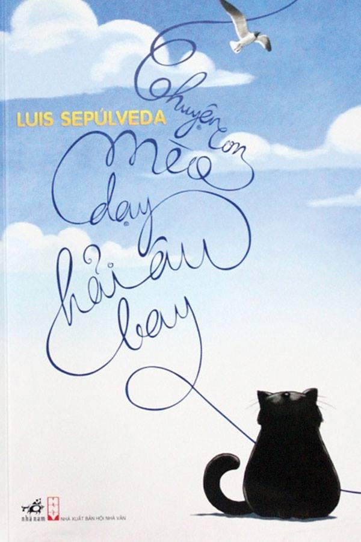

Chuyện con mèo dạy hải âu bay
Thông tin chi tiết
Tác giả: Luis Sepúlveda
NXB: Kim Đồng
Quốc gia: Chile
Thể loại: Thiếu nhi
Số trang: 144
Đã bán: 100
Giá bán: 135,000 đ
Chuyện con mèo dạy hải âu bay (tiếng Tây Ban Nha: Historia de una gaviota y del gato que le enseñó a volar) là kiệt tác dành cho thiếu nhi của nhà văn Chile nổi tiếng Luis Sepúlveda – tác giả của cuốn Lão già mê đọc truyện tình đã được dịch ra 60 thứ tiếng và bán được 18 triệu bản khắp thế giới. Tác phẩm không chỉ là một câu chuyện ấm áp, trong sáng, dễ thương về loài vật mà còn chuyển tải thông điệp về trách nhiệm với môi trường, sự sẻ chia và yêu thương cũng như ý nghĩa của những nỗ lực – “Chỉ những kẻ dám mới có thể bay”.